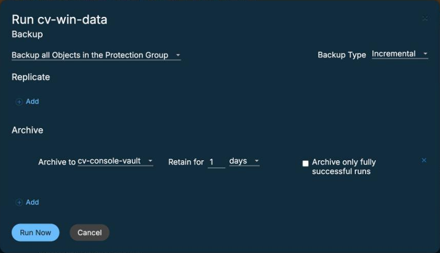
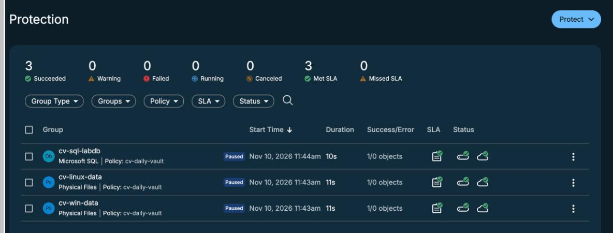

Archive the workloads
By the end you can say what an archive run adds to a backup, predict which kinds of workload archive fast and which slowly, and find the archive line in the Data Protect console.
Northgate Freight is a made-up haulier. It already backs up with Defender Data Protect. Its board asks: what happens if an attacker gets the backup admin's keys? First, Northgate sends a copy of each backup to a Cyber Vault.
The timings come from real runs in our lab. The console screens come from a run. The vault is a Beta in us-south, with no SLA.
Terms used. Logical size: the size of the data on the source server. Manifest: a list of every file and its fingerprint, made before an attack so that restored files can be checked against it. SHA-256: a way to calculate a short fingerprint of a file; the same content always gives the same fingerprint. Namespace: a named area inside an OpenShift cluster.
What an archive run adds
Each Northgate group already has a local backup. An archive run adds a second copy of the same data in the vault. Data Protect writes it with the write key.
Which key did Data Protect need to register the vault and to archive to it?
Show the answer
In our lab the write key was enough to register the vault and to archive. It can list, read and write. The read key can list and read.
A run archives a group that already has a local backup. How many copies of the data exist afterwards?
Show the answer
The run made two snapshots of the same data: the local one, and the copy in the vault.
Which took 601 seconds, and which 4?
Northgate archived four workloads to the vault in our lab. Windows ran first and alone. The others ran at the same time. Here are the sizes. The times are hidden.
Workload Logical size Sent to the vault Archive time Linux files 25.78 GB 19.43 GB ? Windows files 96.4 MB 96.5 MB ? SQL Server 25.3 MB 4.15 MB ? OpenShift VMs 37.6 GB 3.73 GB ?
Which workload took 601 seconds?
Show the answer
Linux files: 601 s.It sent 19.43 GB, about 32 MB/s. SQL Server took 4 s for 25.3 MB. Windows took 34 s. The OpenShift VMs took about 1.5 minutes after their local backup.
Workload Logical size Sent to the vault Archive time Linux files 25.78 GB 19.43 GB 601 s Windows files 96.4 MB 96.5 MB 34 s SQL Server 25.3 MB 4.15 MB 4 s OpenShift VMs 37.6 GB 3.73 GB about 1.5 min
Which workload sent about as much data to the vault as its logical size?
Show the answer
Windows files: 96.4 MB logical, 96.5 MB sent. The other three sent less than their logical size.
Watch for this. These are single runs in our lab. The OpenShift VMs ran on a second Defender cluster. The table does not say how long your own workload will take.
Where the archive shows
These screens come from a run in the Data Protect console, in our lab. Click where you would click. After two misses the right place is marked.

Northgate clicks Run Now on a group. Where does the dialog say the run will also go to the vault?
Show where
Right. The Archive line says "Archive to cv-console-vault, Retain for 1 days". It comes from the policy, so nobody has to pick an archive target. Click Start.

All three groups succeeded. Which column shows how long each run took?
Show where
Right. Duration: 10 to 11 seconds each. The Linux archive copy took 39 seconds for 92.6 MiB. Each row also has a local icon and a cloud icon, both green.
Two wrong conclusions
A Northgate colleague reads the results and makes two statements. Find what is wrong with each.
"Linux archives take 10 minutes. The console run took 39 seconds, so the console must be wrong." What is the fault?
Show the answer
The 601 s run sent 19.43 GB. The second run sent 92.6 MiB (503 files). The time follows the amount of data.
"The archive says Succeeded, so the OpenShift VMs are safe in the vault." What did Northgate do to test that?
Show the answer
In our lab the vault copy restored in 6 min 6 s. 20 of 20 files matched the manifest and the SHA-256 values were the same.
Watch for this. A time from one run, or a Succeeded mark, is not a promise. The restore check is what showed the data came back.
Three questions
Which workload took 4 seconds to archive in our lab?
Show the answer
SQL Server: 25.3 MB logical, 4.15 MB sent. Linux files took 601 s.
Where did the Run Now dialog get its archive line?
Show the answer
The dialog carries the policy's archive line, so no archive target needs to be chosen.
How did Northgate show the OpenShift VM copy in the vault was usable?
Show the answer
Restored from the vault in our lab, with identical data.
You know what an archive run does
An archive run adds a second copy of a backup in the vault, written with the write key. In our lab the Linux files took 601 s and SQL Server 4 s, because the amounts of data differed. The Run Now dialog shows the policy's archive line.